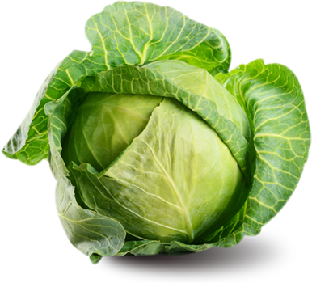
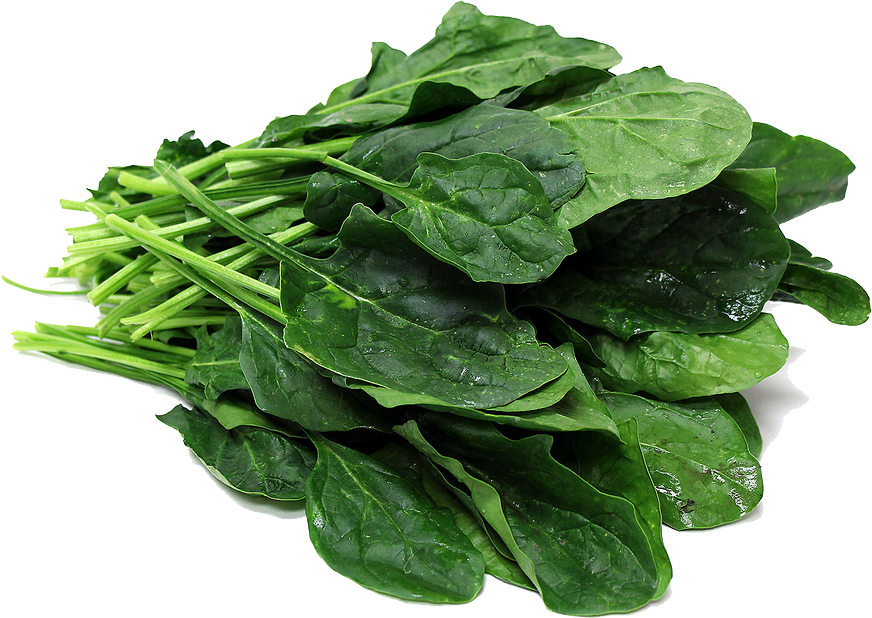

The Most Popular Vegetables in the World
| Rank | Vegetables | Global Production (million metric tons) | |
|---|---|---|---|
| 1 | Tomatoes | 177.04 |  |
| 2 | Onions (dry) | 93.17 |  |
| 3 | Cucumbers and Gherkins | 71.26 |  |
| 4 | Cabbages and other brassicas | 71.26 |  |
| 5 | Eggplants/Augergines | 51.29 |  |
| 6 | Carrots and Turnips | 42.71 |  |
| 7 | Chillies and Peppers | 34.50 |  |
| 8 | Lettuce and Chicory | 26.78 |  |
| 9 | Spinach | 26.68 |  |
| 10 | Garlic | 26.57 |  |